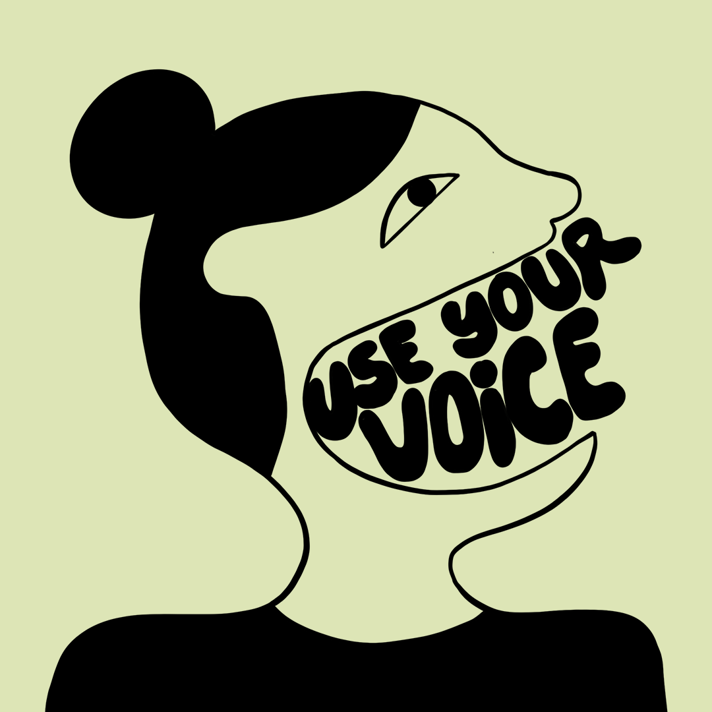

EMANCIPAZIONE
PRIMA ONDATA
Nascita del femminismo nell’Ottocento
Il termine "femminismo" fa la sua comparsa nell'Ottocento, identificando il
neonato movimento per l'emancipazione delle donne. Le protagoniste di
questo periodo sono le suffragette, impegnate nella battaglia per estendere il
diritto di voto alle donne.
Lotta per l'Emancipazione Politica
L'epicentro di questa lotta si trova nella Gran Bretagna, dove nel 1865 si forma
il primo comitato per l'estensione del diritto di voto. In un'epoca in cui solo gli
uomini hanno accesso alla vita politica, le immagini delle suffragette
britanniche che marcano su Manchester e Londra per rivendicare il loro posto
nella sfera pubblica suscitano scalpore in tutta Europa.
Oltre la Politica: Parità nel Contesto Familiare
Inizialmente concentrato sulle rivendicazioni politiche, il movimento
femminista di questa fase mira anche a ottenere la parità tra uomini e donne
nel contesto familiare. Le suffragette non vogliono solo il diritto di voto, ma
anche un ruolo paritario nella struttura familiare.
Contributo delle Donne Italiane al Risorgimento
In Italia, ancora priva di un movimento femminista strutturato, alcune donne
partecipano attivamente al Risorgimento. Il loro coinvolgimento dimostra che
le donne hanno tutte le capacità necessarie per contribuire alla vita politica
del Paese, anche se il movimento femminista italiano deve ancora prendere forma.